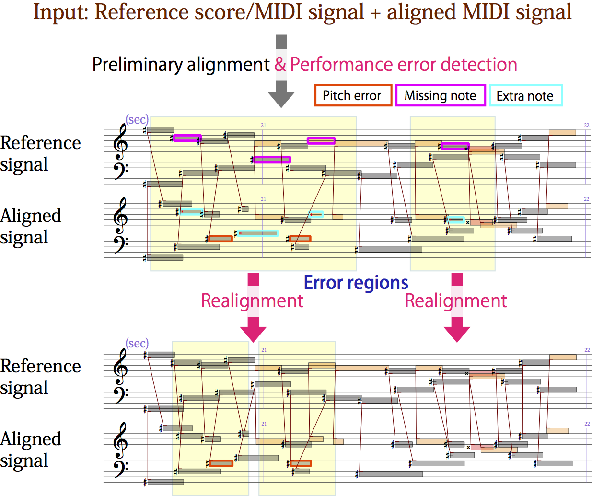
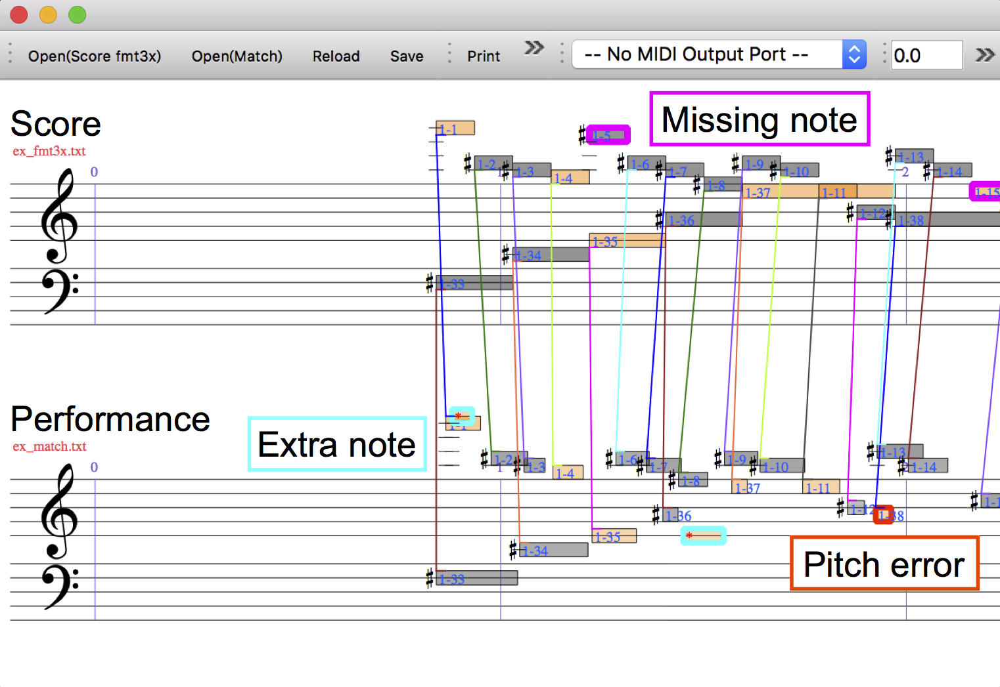
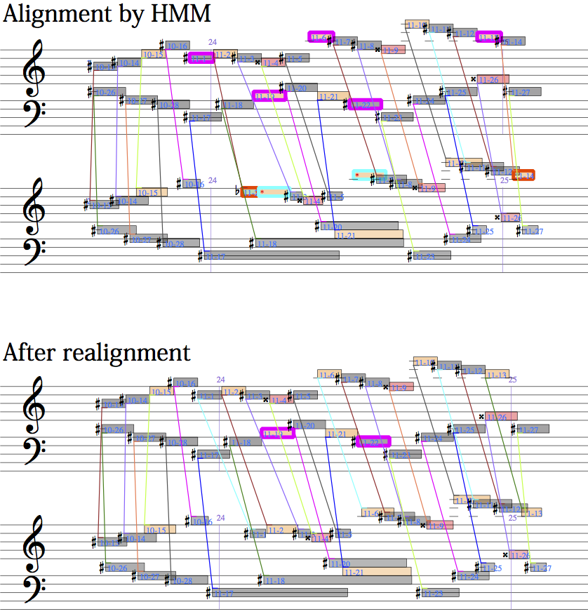
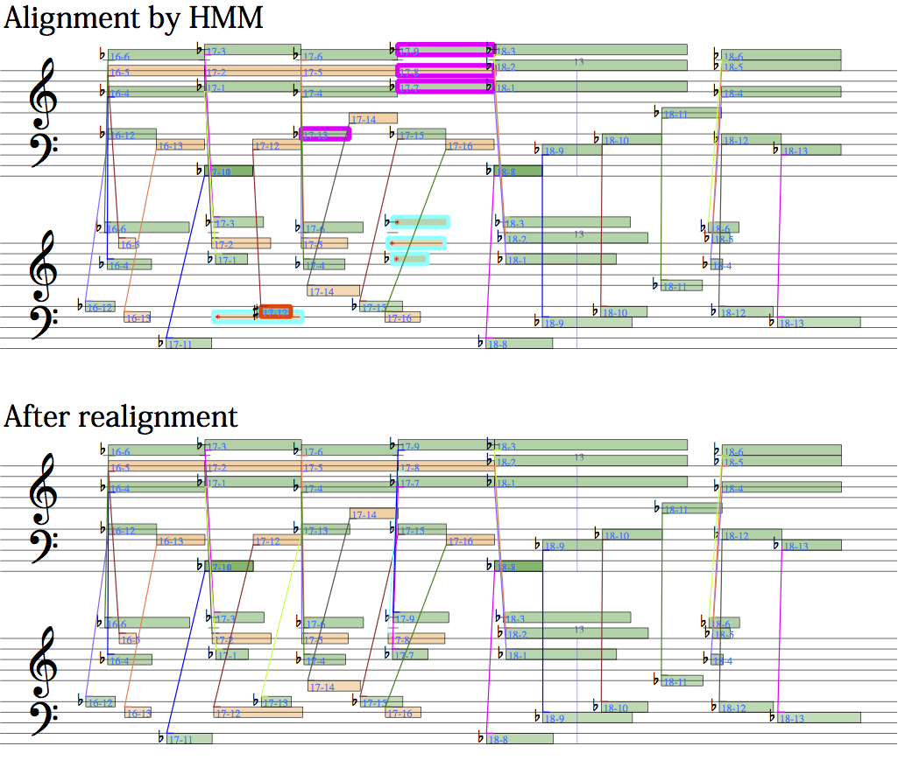
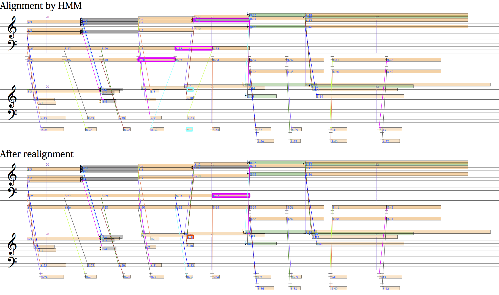
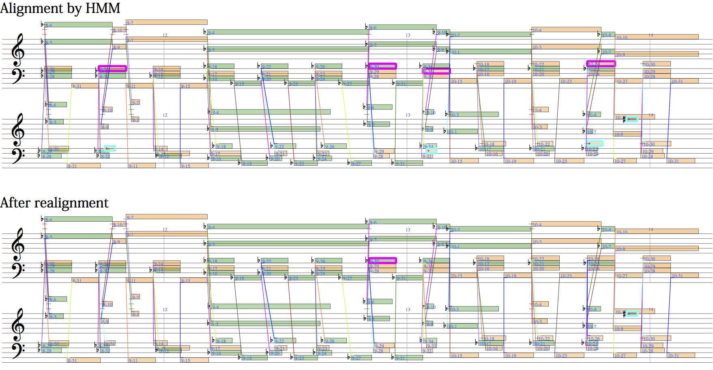

- Eita Nakamura, Kazuyoshi Yoshii, Haruhiro Katayose
Performance Error Detection and Post-Processing for Fast and Accurate Symbolic Music Alignment
In Proc. ISMIR 2017.
 Symbolic music alignment (or score-to-performance matching) is a technique to automatically match a note in a music performance to the corresponding note in the score. This tool includes the currently most accurate alignment algorithm and is provided with a user interface to visualise the alignment result so that one can examine and correct it. The main alignment algorithm consists of three parts:
- preliminary alignment by hidden Markov models (HMMs)
- performance error detection
- post-processing realignment by merged-output HMMs
Source code
Alignment tool (C++)
AlignmentTool_v1.zip (86KB)Manual (PDF)
User interface (Qt code)
AlignmentUI_v1.zip (83KB)Manual (PDF)
Demonstrating examples
Alignment results by HMM are compared with results after realignment by the merged-output HMM. As in examples above, the upper staffs represent the score information and the lower staffs represent the performance information, and missing notes (extra notes; pitch errors) are indicated with pink (cyan; red) bold boxes.Example 1 from Chopin: Fantaisie Impromptu
Example 2 from Chopin: Scherzo No. 2
Example 3 from Brahms: Paganini Variations Book 2 Variation 9
Example 4 from Beethoven: Piano Sonata No. 23 'Appasionata' 1st Movement
Contact
Eita NakamuraResearch Building No 7 Room 417, Yoshida-honmachi, Sakyo-ku, Kyoto 606-8501, Japan
e-mail: enakamura[at]sap.ist.i.kyoto-u.ac[dot]jp
phone: +81-075-753-4952